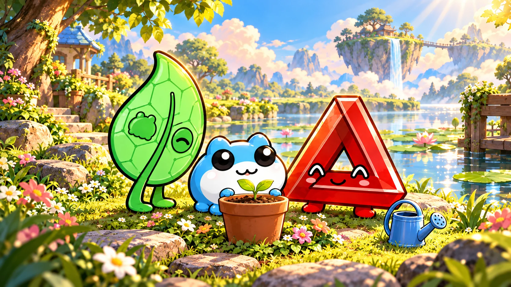
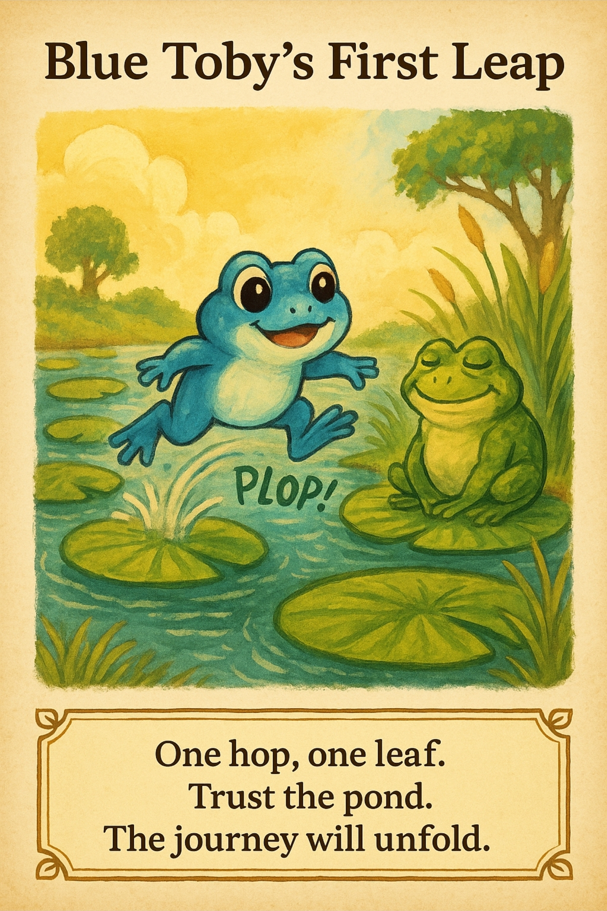
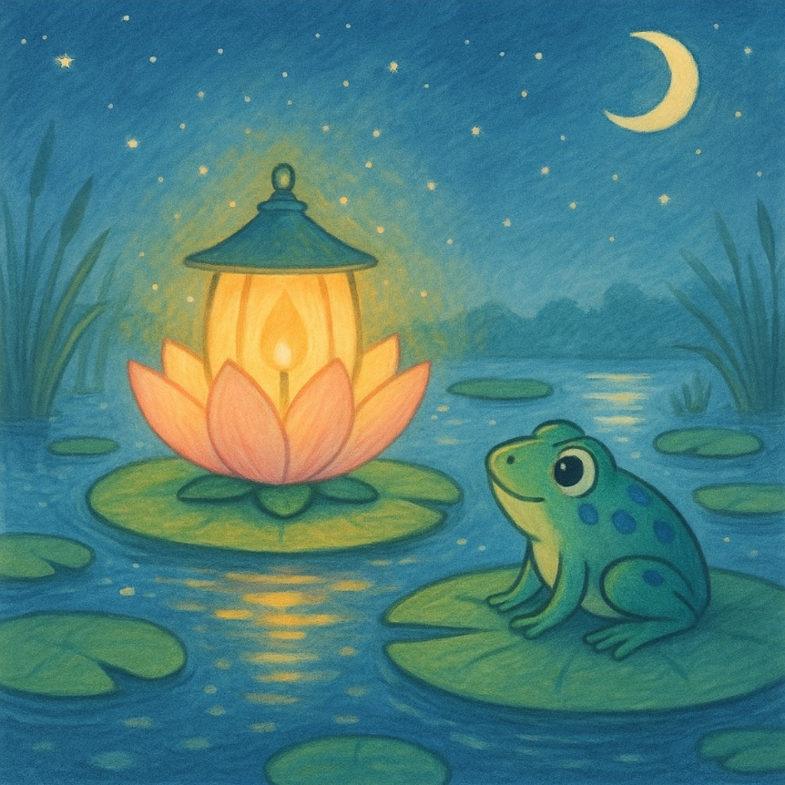
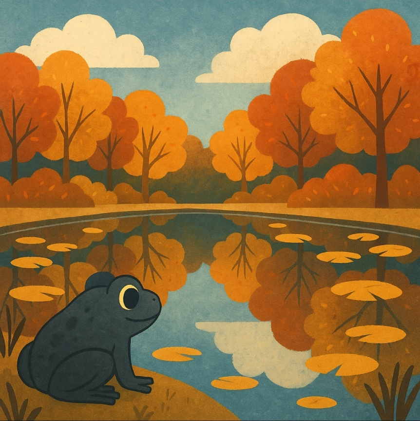
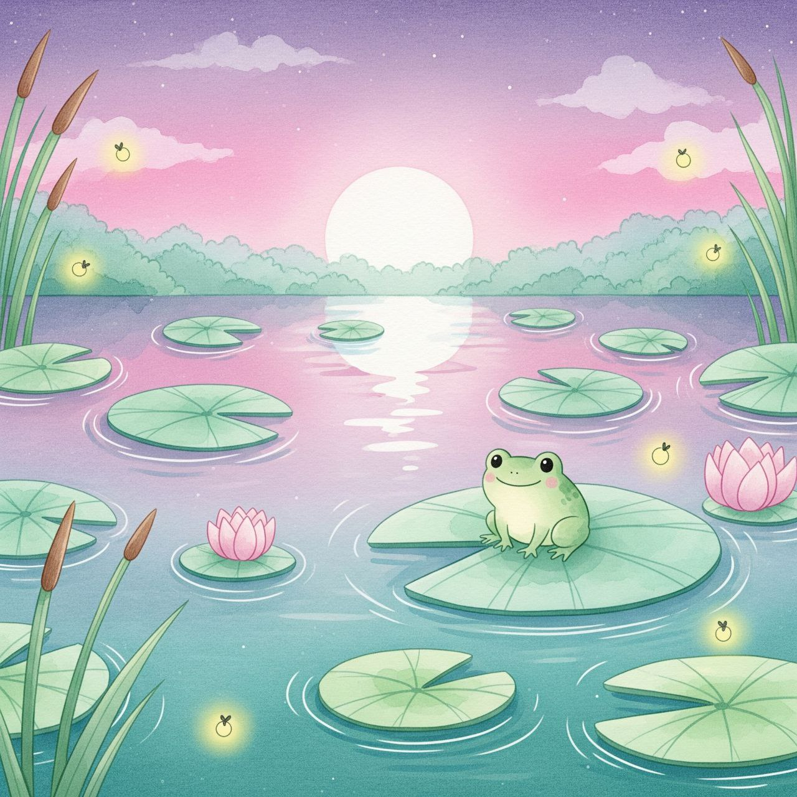

A new adventure · Read together
Blue Toby and the Little Seed
Toby wants his seed to grow right away. His friends help him discover the small, kind things he can do while he waits.
Let’s read →
Welcome, little explorer
Come along with Blue Toby, Taboshi, and Patience. There are stories to share, small things to notice, and good friends to meet.
Pick a place to begin.

A new adventure · Read together
Toby wants his seed to grow right away. His friends help him discover the small, kind things he can do while he waits.
Let’s read →



Three friends. Three new places.
Float into a picture-book world of lanterns, leafy paths, and little ponds. Choose a tiny adventure to read together.

A little courage
Evening comes to the floating garden. Toby discovers he can ask a friend to walk beside him.
Visit the lantern garden →
A little kindness
The path is full of wonders. Toby learns that looking back can be part of going forward.
Follow the leafy path →
A little discovery
One, two, three! The friends slow down and notice different things in the same pond.
Discover the little pond →No hurry. Go at your own pace.
A new game · Find the friends
Six little cards are waiting by the pond. Turn over two at a time and find matching pictures of Blue Toby, Taboshi, and Patience.
Let’s play →Three good friends. Three friendly pairs.
Play together, take turns, and go at your own pace. Every new game mixes the cards for a fresh little discovery.
Look · Listen · Breathe
Take a quiet moment with the three friends. Notice something near you, listen for a sound, and take a gentle breath.
Play with Toby →Try a tiny pond adventure today
Every adventure starts with Toby.
The little blue frog
Our main adventure friend. Follow Toby as he asks questions, tries small steps, and discovers the world with his companions.
The green leaf
Look for the green leaf beside Toby. In these stories, Taboshi helps the friends notice nature and care for growing things.
The red triangle
Look for the red triangle beside Toby. In these stories, Patience reminds the friends that some good things need time.
For the grown-ups beside them
Follow your child’s questions. Pause for a picture, share something you noticed, or try one tiny act of kindness after the story.
Nature, learning, and everyday life.
Explore together →Respect, honesty, and care in daily life.
Read together →Little rhymes for learning together.
Read together →Children’s Corner stories are original family adaptations inspired by Tobyworld themes of patience, kindness, learning, and community. Character identities were provided by ToadAid’s creator. The imagined adventures and dialogue are not original Toadgod tweets.
For the original records, grown-ups can visit the Toadgod Lore Library and Tobyworld website.